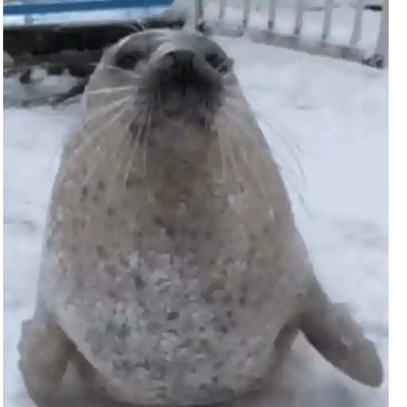
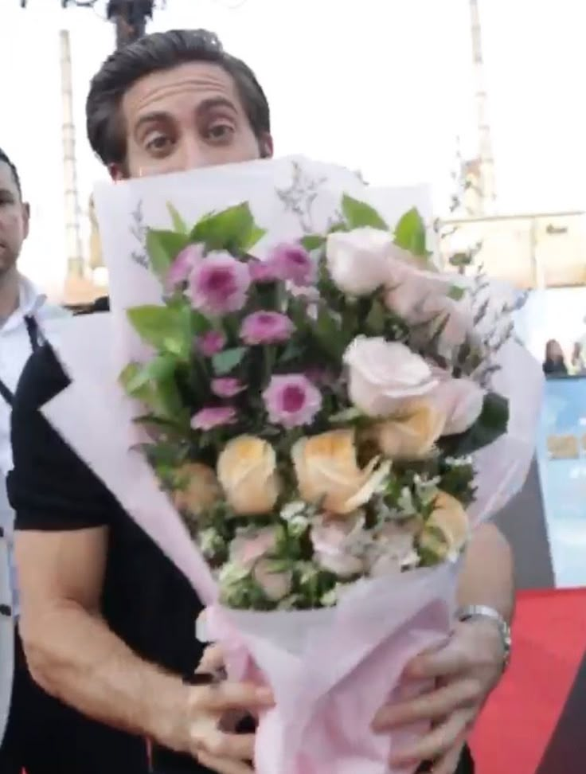

Para vos 💙
Hola mi amoorrr esta sería la primera vez que hago algo mejor y bien echo porque no sabía que podía mejorar más, aparte me encanta hacer estás cosas más si son para dedícartelas. Gracias por haber llegado a mi vida y hacer un cambio drástico, no pensé que iba a sentir tanto por vos y aprender varias cosas de mi y de vos, me alegra no haberte soltado nunca y no haberme ido, la verdad me siento feliz que estés a mi lado y que ahora seamos una relación seria, sos una chica increíble.Siempre van a suceder cosas, habrán peleas, discusiones, confusiones y demás pero todo eso siempre voy a querer buscar una solución con vos, porque quiero arreglar cada momento con vos y superarlo, si ves que tardo mucho no es por qué quiera evitarlo, para mí siempre voy a querer arreglarlo algo con vos.
Te amo infinitamente y te elijo siempre, honestamente te veo en cada video, imágen, dibujo, anime, animal, sticker, cancion, todo me hace acordar a vos, hasta el color que te gusta 💙.
Me haces muy feliz y pasar tiempo con vos es algo especial para armar recuerdos, habrá momentos donde no quiera salir de mi casa o no tenga ganas de hacer nada y después vaya a entrenar ( No significa que entrenar es más importante, hay días donde necesito estar más tranquilo y en casa. Entrenar me despeja, pero socialmente me quedo sin energía igual. No es algo con vos ni porque no quiera verte. )
No me arrepiento nunca de haberte dado un beso, de haberte conocido y compartir muchas cosas con vos. Te adoro y aprecio mucho, tus regalos son algo muy únicos, nunca recibí regalos por ser amado, querido ( términos de estar con alguien ) Llevo cada momento tuyo conmigo.
Te amo muito mi princesa 💝.

